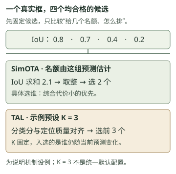

01 / 输出有了格式，还要确定监督责任
损失知道怎样比较，
分配决定拿谁和谁比较。

检测头产生许多候选预测，同一个真实目标附近也可能出现多个预测。标注并没有提前规定这些位置分别负责哪个目标，因此需要在计算损失前建立对应关系。
一次训练前向后，分配器读取解码预测、类别分数、参考点与 GT，给出正样本掩码、对应 GT 索引及质量信息。损失据此取出相应目标，再通过反向传播更新网络参数。分配直接联系的是预测与标注，而非把某个网络参数指定给某个 GT。
当前图像与标注 → 前向预测 → 样本分配 → 构造类别与框目标 → 计算损失 → 反向传播 → 更新参数
动态分配随训练批次中的前向预测重新计算，匹配只在每张图像内部建立。分配本身通常在停止梯度的条件下执行；反向传播通过按分配结果计算出的损失更新参数，不对 Top-k 的离散选择求导。
先把分配拆成四个职责
- 候选资格：哪些预测位置允许参与某个 GT 的匹配？空间约束负责缩小范围。
- 匹配依据：怎样评价每个“预测—GT”组合？分类与定位信息在这里参与。
- 数量规则：每个 GT 选几个预测？可以动态估计，也可以预设 k。
- 冲突处理：同一预测被多个 GT 选中时，最终归谁？
Top-k 只表示按某项指标取前 k 个。它没有单独规定候选范围、评分方式和 k 的来源，因此不是完整的样本分配算法。
监督数据与输出形状的前提，见 样本分配与监督机制。本页在该基础上比较算法规则。
02 / 在质量感知与训练成本之间取舍
固定一个负责位置，
可能忽略其他高质量预测。
YOLOX 的探索中，仅让中心位置负责目标，会放弃其他可能提供有益监督的预测。作者进一步采用质量感知的动态分配，让当前预测情况参与决定监督责任；又因为原始 OTA 的迭代求解带来额外训练开销，将其简化为 SimOTA。
SimOTA 的核心是：先估计这个 GT 本轮适合分配多少个正样本，再选择匹配代价最低的预测。Dynamic-k 是其中的数量估计步骤，不能代替整个 SimOTA。
- 用空间先验筛出候选。
本页以 YOLOX 0.3.0 为参照：预筛保留落在任意 GT 框内或中心窗口内的参考点；对具体预测—GT 组合，不同时满足“框内且中心窗口内”时施加较大代价。候选规则和代价约束要一起理解。
- 计算两两匹配代价。
类别匹配较差或框重叠较差，都提高代价。指定实现结合类别损失、定位项 −log(IoU) 与空间惩罚；代价越小，越适合负责该 GT。
- 用较高的 IoU 估计 k。
取最多 10 个最高 IoU，相加后取整，且至少为 1。这里的“10”是估计数量时取用的上限，不等于最终固定选择 10 个。
- 按最低代价选择动态数量的预测。
若 IoU 之和为 3.7，则先得到 k=3，再选择代价最低的 3 个；如果出现多个 GT 争用同一预测，则按最低代价处理。
中心窗口与 STAL 的候选窗口为什么不能直接等同？
在所列 YOLOX 版本中，中心窗口半径为 2.5×该预测层步长。步长 8 时半径是 20 像素，完整宽度为 40 像素；这不是给 GT 四边各加 20 像素。不同预测层的窗口大小不同。
STAL 则以 GT 尺寸是否过小作为触发条件，补足用于候选筛选的边长，目的是缓解微小 GT 内没有参考点的问题。两者都包含空间先验，但触发规则、尺度关系与完整分配过程不同。YOLOX 后续代码也有候选规则调整，复现时应固定版本。
YOLOX 论文 §2.1，Multi positives 与 SimOTA · YOLOX 0.3.0：代价、空间先验与 Dynamic-k。
03 / 让选出的预测同时具备分类与定位质量
分类分数高，
并不自动意味着框也准确。
如果只看分类，定位不准的框也可能获得优先权；如果只看几何重叠，也不能充分判断类别是否可靠。TAL 的出发点，是让负责目标的预测在这两个任务上尽量对齐。
TAL 源自 TOOD 的任务对齐学习。原始方法包含分配与配套损失；本页主要比较 YOLO 中使用的任务对齐分配器，不将它等同于完整 TOOD 网络或原论文的全部损失设计。SimOTA 同样使用分类与定位信息，不能将“同时考虑两者”写成 TAL 独有的能力。
- 筛出有资格参与的参考点。
普通 TAL 的所列 YOLO 实现使用 GT 内部位置；YOLO26 再由 STAL 调整小尺寸 GT 的候选区域。
- 计算分类与定位的组合分数。
YOLOv10 官方实现使用 α=0.5、β=6；q 为非负截断的 CIoU。TOOD 论文公式使用 IoU，解释原理与复现具体代码时需区分。
- 按预设 k 选高分候选。
这里不使用 IoU 求和估计 Dynamic-k。固定的是数量设置，被选中的位置仍随当前预测质量变化。
- 处理多个 GT 对同一预测的争用。
所列 YOLO TAL 实现按定位重叠质量确定归属；与 SimOTA 的最低综合代价规则不同。
匹配分数还影响怎样构造监督
在所列 YOLOv10 实现中，选中之后还会按每个 GT 的对齐分数与定位质量归一化，生成类别软目标。模型因此不只接收“这个位置是正样本”的信息，也接收与匹配质量相关的监督强度。这一步仍不等于渐进损失对整条分支加权。
采用乘积度量与预设 k，是一组设计选择。是否比 SimOTA 更有效，需要在相同模型、数据与训练预算下对照，不能由公式或发布时间直接判断。
TOOD 论文 §3.2：对齐度量、分配与配套损失 · YOLOv10：归一化软目标与 CIoU 度量 · α、β 的实际配置。
04 / 保持候选资格相同，单独看排序与数量
使用相同预测数值，
不等于采用相同匹配规则。
以下只取一个 GT、一个目标类别与 8 个已满足空间约束的候选，隔离比较代价组合、乘积分数和数量规则。预测 1—8 只是本例编号，不表示不同预测尺度。
Dynamic-k 与预设 k 分别改变什么？
仅改变预测 4 的 IoU，保持其他预测不变；切换规则，比较数量和选中位置。所有数值均为构造示例，不是模型实验结果。
这里只修改一个预测的定位质量数值，不模拟真实框移动。在 TAL 的 k=1 模式中，将预测 4 的 IoU 调到 0.99，可以看到数量仍为 1，但选中位置由预测 2 变为预测 4。
Dynamic-k：8 个 IoU 之和为 3.455，取整后 k=3。
本例选择 3 个预测：2、3、5
按综合代价从低到高选择；IoU 用于估计数量，综合代价用于确定身份。
| 预测编号 | p | IoU | 简化代价 ↓ | 对齐分数 ↑ | 当前选择 |
|---|---|---|---|---|---|
| 默认：SimOTA 选择预测 2、3、5；TAL 的 k=3 示意选择 2、3、4。启用 JavaScript 后显示完整数值。 | |||||
positive_mask = [0, 1, 1, 0, 1, 0, 0, 0] 选中预测的框目标均为同一个原始 GT。
本演示保留了哪些计算，省略了哪些实际细节？
SimOTA 一类别示意：objectness 固定为 0.9，类别代价为 −log(√(p×0.9))，定位代价为 −3log(IoU)，空间惩罚为 0。8 个候选的 IoU 全部参与数量估计，再按综合代价取前 k 个。真实多类别代价还包含其他类别项。
TAL 示意：使用 α=0.5、β=6，并统一令 q=IoU，便于比较数量与组合规则；未计算实际框坐标或 CIoU。k=3 只是为了让 8 行示例容易观察，不是 YOLOv10 一对多的默认设置。实际设置见下节。
本例无多个 GT，因此不运行冲突处理；也未运行 STAL、类别软目标归一化、损失、反向传播或 NMS。这些结果不能用于判断两种分配器的精度、稳定性或速度。
计算规则来自上节所列官方实现；本交互为带明确简化条件的独立数值示例，不是官方分配器复现。
05 / 同一个分配家族，可以服务于不同监督目标
YOLOv10 与 YOLO26，
怎样把 TAL 接入双分支？
一对多与一对一分别需要较丰富和较稀疏的对应关系。YOLOv10 因此让两条分支使用一致形式的匹配度量，同时改变筛选数量。YOLO26 延续这个方向，再调整小目标候选资格与一对一路径的筛选过程。
| 职责 | YOLOX 0.3.0 · SimOTA | YOLOv10 原版 · TAL | YOLO26 当前 · TAL + STAL |
|---|---|---|---|
| 候选资格 | GT 内部或中心窗口预筛，并对具体组合加入空间惩罚。 | GT 内部参考点。 | STAL 为小尺寸 GT 补足候选筛选范围。 |
| 排序依据 | 分类、定位等综合代价；低者优先。 | 分类与定位的对齐分数；高者优先。 | 保留 TAL 的对齐评分思路。 |
| 数量规则 | 根据较高 IoU 的总和估计 Dynamic-k。 | 一对多 Top-10；一对一 Top-1。 | 一对多 Top-10；一对一先 Top-7，再二次筛为 1。 |
| 多 GT 争用 | 按最低综合代价处理。 | 按最高定位重叠质量处理。 | 先处理争用，再执行一对一路径的二次筛选。 |
为什么“先 7 再 1”不能简写成“直接选 1”？
YOLO26 当前实现先形成较大的候选集合，再解决一个预测被多个 GT 争用的问题，最后按对齐分数收紧到一个。由于冲突处理发生在二次筛选之前，这个流程在多 GT 情况下不一定与直接 Top-1 相同。7 与 1 仍是预设值，没有通过 IoU 求和估计。
两个分支分别使用各自的预测进行分配。匹配度量形式与参数相同，不保证它们每轮选中同一个位置，也不意味着一对一结果始终是另一条分支实际结果的严格子集。
YOLOv10 论文 §3.1：双重分配与一致匹配度量 · 原版 10 / 1 配置 · YOLO26 双分支说明 · 当前冲突与二次筛选顺序。
06 / 把数量、身份与训练目标分开
固定 k 仍可动态分配，
TAL 本身也不等于 NMS-free。
“动态”的究竟是哪一部分？
SimOTA 的候选身份与 k 都可以随当前预测变化。TAL 的 k 可以预先设置，但候选身份与匹配质量仍随预测变化。不能因为 TAL 不使用 Dynamic-k，就把它归为训练前已经确定的静态分配。
Top-10 是否保证每个 GT 恰好有 10 个正样本？
不能。Top-k 是筛选设置，随后还要结合空间有效性、有效 GT 掩码和冲突处理。最终掩码才决定哪些预测接受正监督。一对一也不应理解为无条件保证每个 GT 都匹配成功。
为什么采用 TAL 还不能直接去掉 NMS？
一对多 TAL 仍允许多个预测学习同一目标，因此推理可能重复检出。TAL 最初也不是专为免 NMS 而提出。YOLOv10 的免 NMS 路径需要一对一监督、双分支训练与配套推理选择共同工作。
SimOTA 某一轮得到 k=1，也不代表整套训练始终约束每个目标只由一个预测负责，更不能据此直接删除 NMS。
候选窗口里，包含的到底是什么？
空间判断使用特征网格对应的参考点。它不是预测框的全部范围，也不必等于回归出的预测框中心。多尺度候选汇总后参与分配，并非先把整个目标强制划给某一个尺度。
判断一种分配方法，先说明候选、评分、数量与冲突各做了什么，再讨论这些规则怎样影响监督。是否真正改善任务结果，最后由受控实验回答。
07 / 来源、范围与后续归属
原理有出处，
实现有版本，示例有边界。
- YOLOX: Exceeding YOLO Series in 2021，§2.1：从多正样本与 OTA 到 SimOTA 的动机。
- YOLOX 0.3.0 官方检测头：get_assignments、get_in_boxes_info、dynamic_k_matching。本文的中心窗口与代价说明限定此版本。
- TOOD: Task-aligned One-stage Object Detection，§3.2：TAL 的任务对齐动机、分配度量与配套损失；不把它缩减为“固定 Top-k”的发明。
- YOLOv10 的 TaskAlignedAssigner 与 检测损失配置：CIoU、软目标、分支参数。论文 §3.1 解释一致双重分配。
- YOLO26 论文 STAL · 当前候选资格与二次筛选 · 10 与 7→1 的配置。main 核对日期：2026-11-03，后续可能变化。
编排标记：目前是拓展，后续成为哪些系列的主体内容？
SimOTA 部分后续归入 YOLOX 的“样本分配与训练监督”主章节，与 Anchor-free、解耦头及损失结构一起解释。
TAL 部分后续作为 YOLOv8 / YOLO11 的“任务对齐监督”主章节内容；先交代 TOOD 的来源，再核对各系列实际分配器与损失。这里标记的是后续编排方向，不表示已经完成这些系列页面。
YOLOv10 主体保留一致双重分配的动机与作用，YOLO26 主体保留 STAL 和渐进损失。本专题作为共享的机制解释，通过链接引用，避免在各系列中复制大段内容。